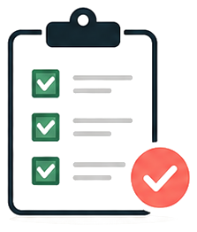
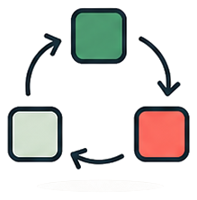

問い合わせ一次返信
よくある質問や相談内容に応じて、初回返信案をすばやく作成します。
士業事務所のためのAI導入パートナー
相談対応・文書作成・確認業務を、90日で仕組み化。人の判断を残しながら、繰り返し業務だけをAIで整えます。
無料相談を予約する›よくある質問や相談内容に応じて、初回返信案をすばやく作成します。
契約書や申請書のたたき台を作り、確認と修正に集中できます。
確認観点をチェックリスト化し、担当者ごとのばらつきを減らします。
一部の人しか使えず、業務として定着しない。
確認フローが統一されず、活用にばらつきが出る。
成果が個人に閉じ、事務所全体の資産になりにくい。

担当者ごとに対応品質やスピードに差が出て、引き継ぎや教育に時間がかかる。
契約書や申請書類の下書き、確認前の整理に毎回まとまった時間を取られている。

忙しい日ほど初動が遅れ、相談機会の損失や印象低下につながりやすい。

ナレッジが人に残り、教える側の負担が増えて業務がなかなか標準化しない。

何から手をつければよいか不安で、費用対効果や使える業務を判断しづらい。
士業事務所の実務をAIで置き換えるのではなく、相談対応・文書作成・確認・教育の流れを、現場で使い続けられる仕組みに整える伴走型サービスです。

現状ヒアリング業務負担を整理
よくある質問や問い合わせ内容に対して、返信案をAIが作成。対応スピードと品質を安定させます。
契約書や申請書類のたたき台を作成し、確認と修正に集中できる状態をつくります。
過去の注意点や確認観点をもとに、抜け漏れが出にくい運用を整えます。
属人化している知見を整理し、新人教育や日常確認に使える形にします。
よくある質問や判断手順をまとめ、教育時の説明漏れを減らします。
予約受付や相談導線を整え、スタッフの初動負担を下げます。

返信や確認が担当者頼み
毎回ゼロから下書きを作成
新人教育が追いつかない
AIの使い方が人によって違う
一次返信案と確認観点を標準化
文書作成の初動を短縮
職員が同じ手順で使える
運用ルールとして定着
AI化しやすい業務と任せてはいけない判断を切り分けます。
返信案、下書き、確認リストなど小さく使える型を整えます。
職員が同じ手順で使えるよう、ルールと教育を整えます。
どの業務をAI化したいか整理します。
入力してよい情報と承認範囲を確認します。
情報管理と確認フローを整理します。
無理のない進め方を確認します。
効果が見えやすい順番を決めます。
よくある相談への返信文を標準化します。
用途別の下書き手順を整えます。
確認漏れを防ぐ観点を整理します。
情報管理と承認フローを定義します。
相談時の情報の扱いを明確にし、機密情報に配慮して進めます。
導入前の確認フローを設計し、リスクを抑えます。
専門判断は人が行い、AIは補助に徹する運用を徹底します。
業務を標準化したい
問い合わせ対応を早くしたい
採用後の教育を楽にしたい
すべてAIに丸投げしたい
法的判断をAIだけに任せたい
社内確認なしで進めたい
フォームからご希望日時を選びます。
02課題や業務フローを伺います。
AI化できる部分を特定します。
最適な導入プランをご提案します。
スモールスタートで検証します。
FAQ
下記フォームより、ご希望の日時をご選択ください。